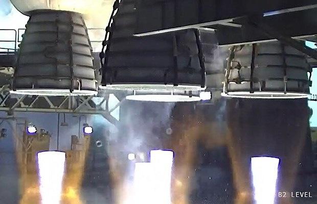

Cuando la densidad cambia: sonido, toberas y ondas de choque
Casi todo lo que contamos sobre fluidos supone que su densidad no cambia. Para el agua es casi exacto, y para el aire es una buena aproximación mientras se mueva despacio. Pero cuando el aire va muy rápido, se comprime y se expande, y aparecen fenómenos que no existen en un fluido incompresible: el sonido, las toberas que aceleran el gas al ensancharse y las ondas de choque. Es el mundo del flujo compresible.
David Tong, de la Universidad de Cambridge, se pregunta qué física nueva aparece cuando la densidad de un fluido puede cambiar, y responde: el sonido [1]. En un fluido compresible la densidad pasa a ser una variable más, y hace falta una ecuación extra que viene de la termodinámica y obliga a pensar en la temperatura [1]. Tong ya lo había adelantado: la aproximación incompresible es buena mientras el fluido se mueva mucho más despacio que el sonido, que en el aire viaja a 340 m/s y en el agua a unos 1500 m/s [1]. El cociente entre las dos velocidades es el número de Mach.
En un flujo incompresible, un caño que se angosta acelera el fluido y uno que se ensancha lo frena: es la ecuación de continuidad. En un flujo supersónico pasa exactamente lo contrario. La guía de aeronáutica de la NASA lo deduce combinando la conservación de la masa, la de la cantidad de movimiento y una relación de los gases [2]:
¿Por qué? Según la NASA, en un flujo supersónico, para conservar la masa cambian a la vez la densidad y la velocidad, y la densidad cambia mucho más que la velocidad: el gas se expande tanto que, aunque el conducto se ensanche, tiene que ir más rápido [2].
Así funcionan las toberas de los cohetes y los estatorreactores: una parte que se angosta hasta una garganta y otra que se ensancha, la tobera convergente-divergente [2]. En la garganta el flujo es sónico, con Mach igual a 1, y fija el caudal de gas; después, en la parte divergente, el gas se expande y se vuelve supersónico, con un Mach que depende de cuánto se ensancha la tobera [2].

La multitud que se dispersa: imaginá una multitud que sale por una puerta angosta. Si la gente camina tranquila, al llegar a una plaza amplia afloja el paso. Pero si viene corriendo tan rápido que no puede frenar, al llegar a la plaza se desparrama y se aleja aún más rápido, ocupando todo el espacio. El gas supersónico en la parte que se ensancha de la tobera hace eso: se expande y acelera a la vez.
Una onda de choque es un salto casi instantáneo en la presión, la densidad y la velocidad del gas. Tong cita la sorpresa del reverendo James Challis, que en 1848 descubrió que las ecuaciones de Euler producían discontinuidades en la velocidad: «Esto es un absurdo manifiesto», escribió [1]. La viscosidad suaviza esas discontinuidades, pero a escalas grandes un salto brusco es una muy buena descripción de lo que pasa [1]. Tong muestra que su estructura sale de las leyes de conservación de la masa, la cantidad de movimiento y la energía [1].
Y prueba un resultado importante: el gas que entra a un choque tiene un número de Mach mayor que 1, y el que sale, menor que 1 [1]. Es decir, las ondas de choque solo se forman en flujos supersónicos, y después del choque el gas va más lento que el sonido [1]. La NASA agrega que una perturbación brusca a velocidades cercanas o superiores a la del sonido genera una onda de choque que afecta la sustentación y el arrastre de un avión [3].
El empuje de un cohete: la NASA explica que el empuje de una tobera depende del caudal de gas, de la velocidad de salida y de la presión a la salida, y que los tres los fija el diseño de la tobera [2]. Es la cantidad de movimiento de un chorro, ahora con un gas que sale a velocidad supersónica.
Cuando un gas se mueve cerca de la velocidad del sonido o más rápido, su densidad deja de ser constante y la física cambia. Las toberas aceleran el gas al ensancharse, las perturbaciones se acumulan en ondas de choque, y la frontera entre los dos mundos la marca el número de Mach: debajo de 1, el aire se comporta casi como un líquido; encima, como un gas que se comprime y se expande con violencia.
Pregunta para la comunidad: Con la fórmula de la NASA, ¿qué pasa exactamente en M = 1? ¿Por qué eso obliga a que el flujo sea sónico justo en la garganta de la tobera, donde el área es mínima?